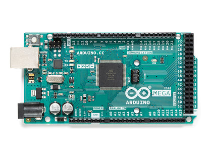
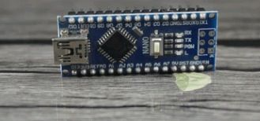

Il existe plusieurs type de carte ARDUINO dont les trois principales sont :


ARDUINO sert a faire de la domotique , de l'automatisation (...).
Il permet de creer : des maisons intelligentes,des voitures autonome et plein d'autre projet.
Pour installer l'IDE ARDUINO,cliquer sur le lien ci-dessous qui vous redirigera sur le github Arduino
Pour ce faire ouvrez l'IDE,rendez vous dans fichier , exemple,basics,puis dans blink
connecter votre carte Arduino a l'ordinateur , rendez vous dans outil pour choisir le type de carte puis le port . Ensuite televersez le code . Vous verez qu'une led va clignoter sur la carte
BRAVOOO!!!!!! . Vous venez de terminer votre premier programme Arduino
Pour plus d'approfondissement vous pouvez suivre la chaine youtube ELECTROCODEUR ou U=RI
Create by MILLEWA YASSON in his first html project